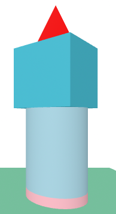

A big electric pen that uses ink to write on paper. This pen has a little screen on it where you can see the words you are writing. This is the part of the pen that you need to charge, luckily, you don't have to charge it daily.
The mistakes that the pen picks up on are grammar errors. When you make a grammatical mistake, the screen flashes red to alert you that something isn’t grammatically correct. If you misspell a word, then the screen will flash blue. Once the screen is done flashing, it will underline a sentence where the error is. This way, the person knows what's wrong and can try to fix it.
You can buy a pack of 10 of these pens on amazon for $7.
